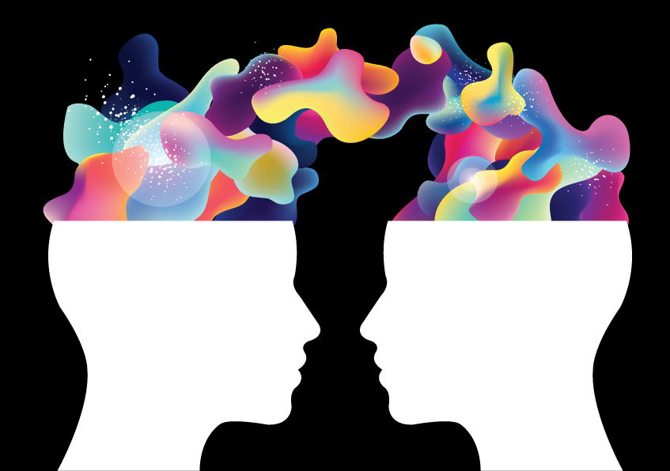

Princeton Neuroscience Institute "Inside-out" Seminars

Poster and logo design by Lisa M. Festa
The "Inside-Out" seminars bring professors from professors from other Princeton departments to speak with the PNI community about scholarship that impacts ideas and practices in our field.
We are hoping to foster a trans-disciplinary dialogue that enriches our understanding of the societal forces shaping neuroscience and vice-versa.
The first series will feature talks on a range of topics:
how neuroscience impacts and interacts with conceptions of race;
how "free will" is formulated in quantum mechanics;
how implicit biases can be measured in machine learning models of human language use - and what this might mean for how bias is transmitted;
and how the metaphors we use to think about the mind and brain have shaped their study in science and medicine.
The four seminars will be held on Thursdays, at 4:30pm, in Princeton Neuroscience Institute Room A32, the time and location regularly reserved for Neuroscience Seminars, and will be followed by a reception with the speakers.
The lectures will be video recorded and posted online.
Spring 2018
February 15th: Ruha Benjamin (African American Studies)
and Oliver Rollins (Sociology, UPenn) - "Imaging Difference: Social Neuroscience and the Logics of Race"
April 5th: John Conway (Mathematics) - "The Free Will Theorem"
April 12th: Arvind Narayanan (Computer Science) - "Data as a mirror of society: lessons from the emerging science of bias in machine learning"
April 19th: Katja Günther (History of Science) - "The Mirror and the Mind: Reflections on the Self in the Sciences of Mind and Brain"